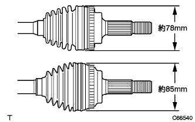

When the joint is moved up and down, left and right, or axial direction, it operates smoothly and checks that there is no significant play.
Inspect that there is no crack, damage and grease leakage of the joint boots.
- ■ Attention ■
- Drive shaft ASSY is carried horizontally.
 |
Confirm that the front drive shaft has the following dimensions.
- □ Participation □
| engine | Outboard diameter | LH | Rh |
|---|---|---|---|
| 1NZ | - | 574.3 ± 5mm | 813.3 ± 5mm |
| 2NZ | Outer diameter 78mm | 572.3 ± 5mm | 813.3 ± 5mm |
| 2NZ | Outer diameter 85mm | 574.3 ± 5mm | 813.3 ± 5mm |
|  |
The outer diameter of the outboard joint is measured using the caliper.(Engine type 2NZ-FE)
- ■ Attention ■
- The grease amount of boots is different depending on the outer diameter of the outboard joint, so it is always measured.
- □ Participation □
- There are two types of outboard joints, about 78 mm and about 85 mm.